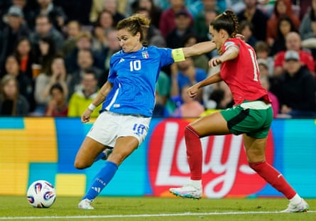
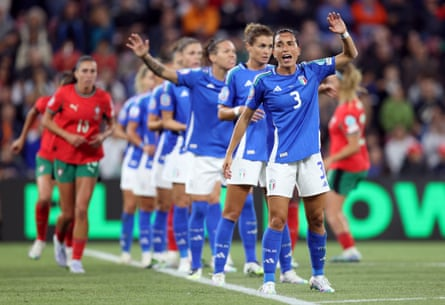

There was drama in Geneva as Diana Gomes struck late to salvage Portugal’s European Championship hopes. In a breathtaking conclusion to the match, Cristiana Girelli thought she had sent Italy through to the quarter-finals. Francisco Neto’s side piled on the pressure in the final stages, however, and equalised in the 89th minute to ensure their dreams of progress remained alive.
“We were solid, we were brave,” said a delighted Neto. “We played high, pressed our opponents, and played like a team in the European Championship. We’re a team with personality and ambition. It’s not easy when you’re losing, then you score but it’s disallowed again, and then score again! I’m very proud.”
“The last words I told my players was to play, to have fun,” he continued. “Playing in a European Championship is a privilege. They’re friends, they want to do things for each other. As a team, they really rise to the challenge.”
There had been contrasting fortunes on the opening day for both. While Italy earned a hard-fought victory over Belgium, Portugal had suffered a morale-sapping defeat against Spain. This was not quite last chance saloon for Neto’s side but almost, knowing they must avoid defeat to avoid elimination.
It was most likely for this reason that the Portuguese manager rang the changes. Prior to this match, they had conceded 25 in the last five – a defensive record that will never bring success at this level. Goalkeeper Patrícia Morais came in for Inês Pereira to gain her 99th cap while Ana Borges and Joana Marchão brought considerable experience into defence. They were given a significant boost with the return of Kika Nazareth for the first time since suffering an ankle injury in March. The 22-year-old playmaker was making her long-awaited return against the side she made her senior international debut against just five years previous.
Italy, meanwhile, had impressed against Belgium and manager Soncin stuck with the same team that had served them so well. Girelli had the armband once again, making her 121st appearance for her country.
Portugal’s Borges and Andreia Jacinto had emphasised pre-match the need for a fast start. They were compact throughout the first half, repelling Italy’s advances and even dominated the ball without creating anything of real note. When they did break, Soncin’s well-drilled team dropped quickly to defend the space in behind and counter the speed of the likes of Diana Silva.
Cristiana Girelli prepares to curl the ball around Diana Gomes and put Italy 1-0 up.Photograph: Pier Marco Tacca/FIGC/Getty Images
Le Azzurre, in contrast created the best opportunities. Girelli was at the heart of the action and forced a world-class stop from Morais before turning a Manuela Giugliano cross wide.
Portugal rode their luck at times. Cecilia Salvai came so close to making her mark after missing the last three major tournaments with injury but saw her header agonisingly crash off the bar. Emma Severini had a goal ruled out for offside before the Portugal goalkeeper was on hand once again to keep her team in the contest. When Girelli met Sofia Cantore’s low cross, the ball looked destined for the back of the net but Morais instinctively stuck out a foot. She turned fist-pumping to the fans behind the goal, celebrating as if she had scored.
The second half was a quiet affair until the game burst into life with 20 minutes left.
Girelli is a character that embodies women’s football in Italy and she made her mark on this competition with a spectacular curling effort that gave Morais no chance. As the tears fell in celebration, the significance of the moment was etched all over the forward’s face.
Lucia Di Guglielmo of Italy gestures as she tries to organise a defensive line against Portugal.Photograph: Charlotte Wilson/UEFA/Getty Images
Neto’s side had not read the memo, however, and launched an energetic response as they piled the pressure on Italy’s goal. Diana Silva thought she had levelled when she turned a rebound effort home only for a lengthy VAR check to rule it out for offside.
Not to be deterred, Portugal continued to push forward and finally got their rewards thanks to a sweetly guided finish from Diana Gomes with a minute left on the clock. Jubilant celebrations followed as Neto’s side breathed fresh life into their campaign.
There was still time for Ana Borges to receive a second yellow but it mattered little as Portugal go into their final game against Belgium knowing they have the chance to reach the knockouts. Italy need a point in a tough encounter with Spain to ensure qualification.